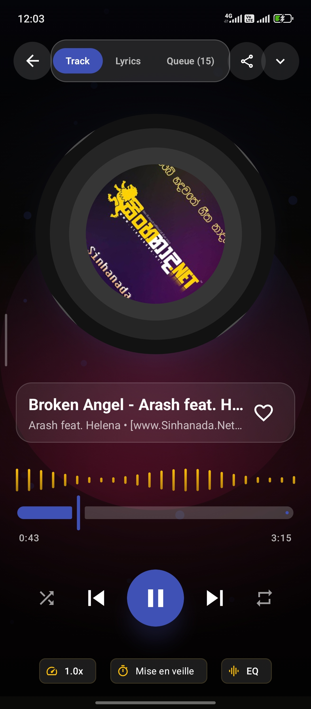
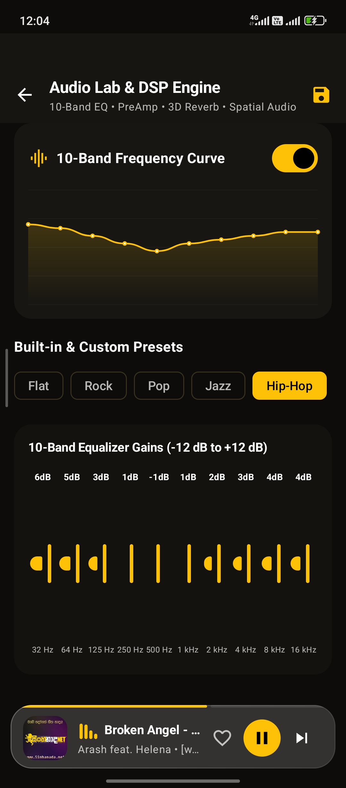
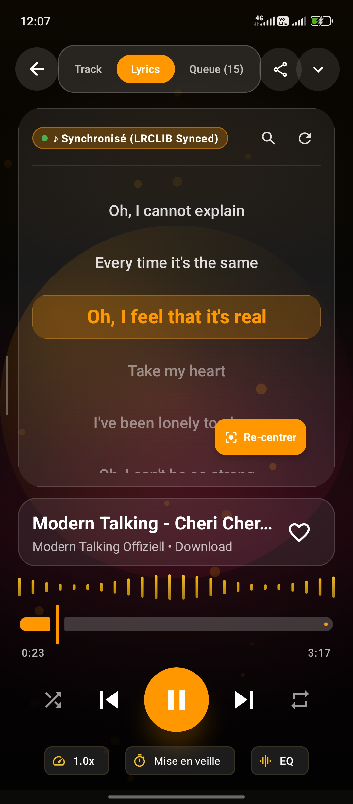
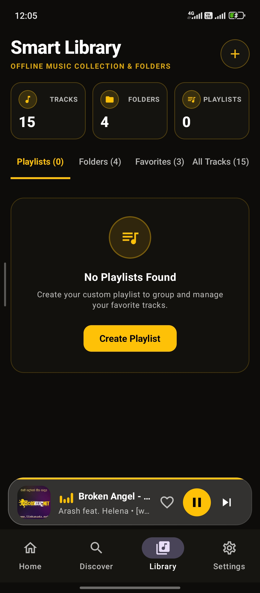
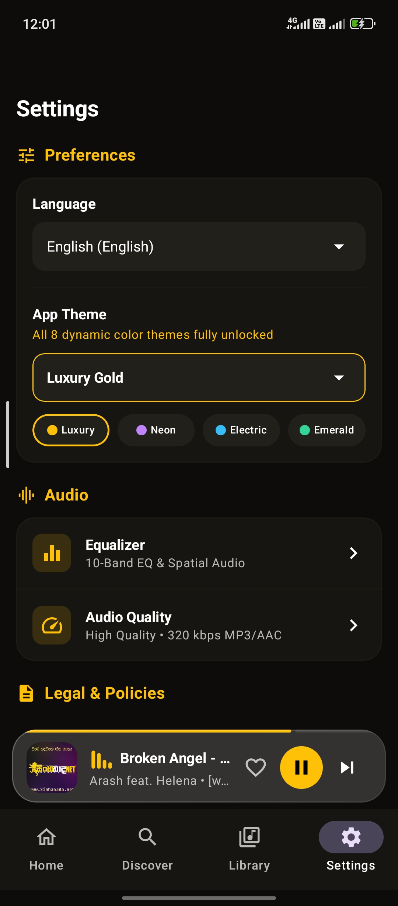

📱 Features & Application Screenshots
Visual tour and technical documentation for all core features in Nova Music, accompanied by actual application screen mockups.
1. Now Playing Screen & Audio Visualizer
The full-screen music player features a rotating vinyl artwork disc, dynamic ambient background gradient glow, waveform audio visualizer canvas (AudioVisualizer.kt), full playback controls (shuffle, previous, play/pause, next, repeat mode), pitch/speed adjustments, sleep timer, and bottom quick sheets.
- Real-time animated audio canvas visualizer
- ExoPlayer audio progress slider with duration display
- Direct entry to Synchronized Lyrics and Equalizer

2. Local Music Library & Folder Browser
Scans all local device audio files (.mp3, .flac, .m4a, .wav) and categorizes them into clear tabs: Tracks, Playlists, Albums, Artists, and Folders.
- Real-time search bar & sort ordering
- Vector cover artwork fallback loader
- Persistent Mini Player bottom bar

3. 10-Band Equalizer & Audio Lab
Built-in 10-band DSP Equalizer slider controls (60Hz to 14kHz) with interactive frequency curve canvas (EqualizerCurveCanvas.kt), hardware Bass Boost (+12dB), 3D Virtualizer surround effect, preset selector (Rock, Pop, Jazz, Acoustic, Flat), and custom preset persistence.

4. Synchronized Karaoke LRC Lyrics
Integrates with LrcLib API to automatically fetch and cache synchronized LRC lyrics. Highlights active singing lines in bright neon text with auto-scroll and manual timestamp calibration controls.

5. Custom Playlists & Favorites
Create, rename, reorder, and remove custom playlist collections backed by local Room database (PlaylistEntity & PlaylistSongCrossRef).

6. Utilities, Insights & Duplicate Finder
Nova Music includes advanced audio utilities:
- Duplicate Audio Scanner: Scans device storage to detect duplicate audio tracks by file size, title, and hash comparison to free storage space.
- Listening Insights: Tracks most played songs, total listening hours, and favorite genre statistics.
- Metadata Tag Editor: Allows editing song title, artist name, and album information directly in local files.
7. Application Settings & Preferences
Comprehensive application settings panel allowing buyers and users to configure theme palettes, audio crossfade, scan directories, active language localization, and audio hardware preferences.
